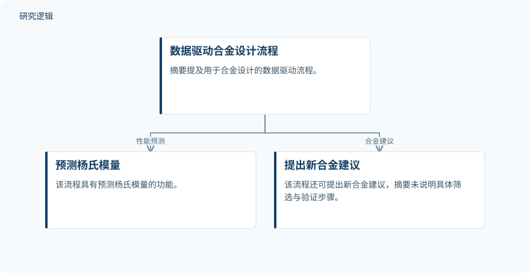

摘要解读
融合设计、生物材料与数字制造的髋关节假体优化：当前趋势与挑战
Optimizing Hip Joint Prosthetics through Integrated Design, Biomaterials, and Digital Manufacturing Techniques: Current Trends and Challenges
解读更新 2026-11-10 18:07 · 依据公开摘要整理，未核验全文细节
髋关节假体如何兼顾长期服役、骨组织适配与个体化需求？这篇综述将生物材料、力学设计和数字制造放在一起讨论，其阅读价值在于理解这些技术如何相互配合，以及距离可靠临床应用还存在哪些障碍。
文章目录
髋关节假体优化，不只是更换材料
随着全髋关节置换需求增长，假体优化需要同时关注使用寿命、生物相容性和患者功能。摘要呈现的问题并非寻找某种单独的“最佳材料”，而是协调材料性能、载荷传递、表面状态与制造过程。
本文属于综述，汇总既有研究的趋势与挑战，而非报告一套新假体的完整验证结果。以下解读仅依据所提供的摘要，不代表已经阅读全文。
从材料与摩擦腐蚀测试，连接计算设计
摘要列出的证据范围包括金属与陶瓷承载材料、表面工程、体外及摩擦腐蚀测试，以及有限元分析和机器学习。测试工具涉及髋关节模拟器，以及开路电位、电化学阻抗谱和极化等电化学技术。
计算方法既用于分析载荷传递与接触力学，也用于数据驱动的合金设计：预测杨氏模量并提出新合金建议。综述还讨论了增材制造，以及人工智能支持的多孔晶格逆向设计和生成式设计。
依据摘要整理的数据驱动合金设计示意


仅展示摘要明确提及的合金设计流程及其功能，不代表论文原图，也不补充训练数据、算法配置或验证结果。
下载 SVG图示关系说明
实线表示相邻阶段的信息流，虚线表示跨阶段联系或反馈。
数据驱动合金设计流程 → 预测杨氏模量：性能预测；数据驱动合金设计流程 → 提出新合金建议：合金建议
材料适配与数字设计各有进展，也各有边界
材料方面，摘要指出低模量β型钛合金旨在减轻应力屏蔽。相较于Ti-6Al-4V的114 GPa，TNZT为55–70 GPa，Ti-33Nb-4Sn约为36 GPa，更接近骨的约19–30 GPa；但模量接近本身不能等同于整体临床表现更优。
表面改性被总结为有助于提高耐腐蚀性与骨整合，包括多孔涂层、羟基磷灰石涂层、阳极氧化和生物活性涂层。陶瓷具有耐磨性和生物相容性优势，但脆性仍是需要关注的问题。
数字技术方面，摘要列举了个体化多孔晶格设计、界面应力优化和骨整合预测等应用，并报告峰值界面应力降低36.6%的结果。这里应将其理解为综述汇集的具体案例，不能视为所有人工智能设计均能达到的效果。
案例指标之外，验证范围仍需查阅原研究
摘要未交代各项结果对应的样本规模、比较基线、载荷条件、数据划分或外部验证范围，也未说明综述的检索与纳入流程。因此，无法仅凭摘要判断研究覆盖是否充分，或不同案例能否直接比较；这不意味着论文没有开展或讨论这些内容。
作者明确指出，长期临床验证、磨损与腐蚀及碎屑相关骨溶解、多材料打印限制、工艺参数波动、成本和规模化仍是挑战。传感监测、预测维护与数字孪生则主要作为未来发展方向，不能写成已获充分验证的临床收益。
阅读启发：把设计结果与服役证据分开看
阅读启发：继续阅读时，可重点追问生成式设计的优化目标如何对应骨整合、磨损和长期服役表现，以及制造波动是否进入评价。对于智能监测，则应关注传感数据如何支撑临床判断，并区分实时预测能力与实际改善患者结局的证据。
以上为本站阅读启发与建议，不是论文已验证的结论。